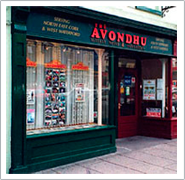

- Home
- News
- Letters
- Farming
- Sport
- Theatre
- Village Arts Cantre
- Advertisements
- Photo Gallery
- Archive
- Contact Us
- Castlelyons Parish
- CinemaStore
- Conna Community Council
- Galteemore
- Hotels in Cork, Ireland
- KMC Kitchens, Fermoy
- Mitchelstown Golf Club
- Mitchelstown Music Festival
- Paudie McGrath's Fermoy
- Toss Bryan, Fermoy
Address:
Telephone:
Fax:
Email:
Welcome to The Avondhu Newspaper Official Website
The Avondhu Press Newspaper was established in 1978 and covers the areas of North East Cork, West Waterford, South Limerick and South Tipperary. This successful weekly - published Thursday - boasts a readership in excess of 39,000. The first edition was a modest 4 page edition which has since grown to an average of 80 pages.
"LET THE PEOPLE DECIDE" - LEISURE CENTRE CHAIRMAN RESPONDS TO SOME OF THE QUESTIONS POSED
- The recent statement made at the Mitchelstown Leisure Centre’s public meeting on Tuesday, September 4th that it is the committee themselves that will ultimately decide where the leisure centre goes, has infuriated many people in the area.
- See full story
COOLAGOWN CELEBRATES SILVER MEDA
- Those living in Coolagown, the tiny village east of Fermoy, found themselves stunned this week when they along with only twelve others in the country received a silver medal in the national tidy towns competition.
- See full story
MART DEVELOPMENT POSES ENORMOUS CHALLENGE TO FERMOY TOWN COUNCIL’
- The impending development to the mart site in the centre of Fermoy town will, if not properly dealt with, plunge the town back to pre-bypass days according to one concerned local trader.
- See full story
MITCHELSTOWN BYPASS CONTRACT NOT AWARDED
- Despite recent claims made by Cork county councillor Frank O’Flynn, The Avondhu has learned that the contract to build the Mitchelstown Bypass is still at tender, and has not yet been awarded.
- See full story
LABOUR FRONT BENCH SPOT FOR SHERLOCK
- Newly elected Labour TD Sean Sherlock has been confirmed as the party’s new spokesperson on Agriculture and Food. Labour leader Eamonn Gilmore revealed his front bench line-up following a Parliamentary Party meeting at Leinster House.
- See full story
SHOCK’ AT STATE KILWORTH PLAYGROUND
- A Fermoy resident told The Avondhu that she was ‘shocked’ at the condition of the Kilworth playground last weekend.
- See full story